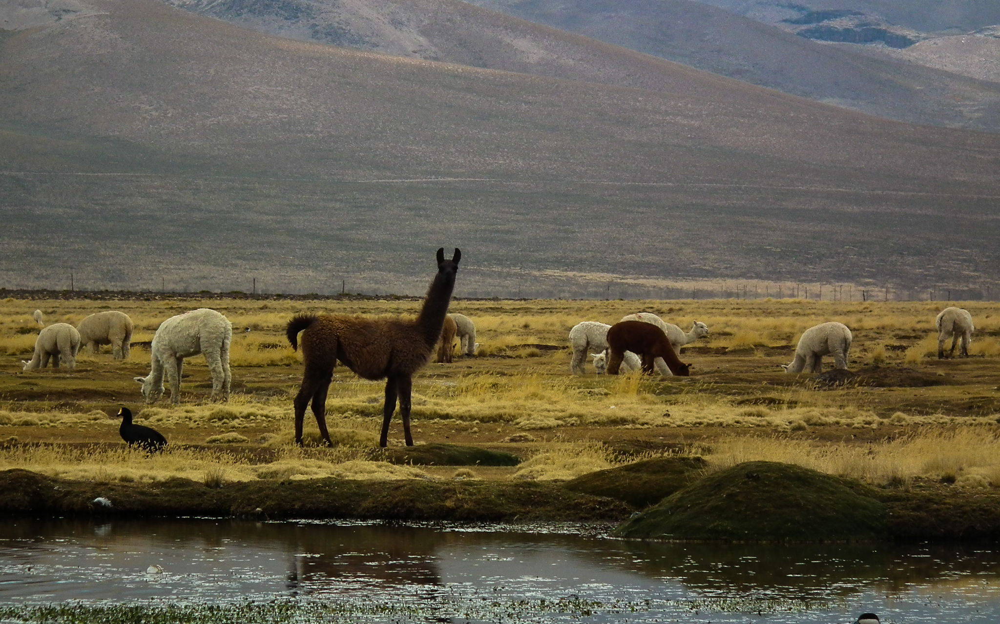
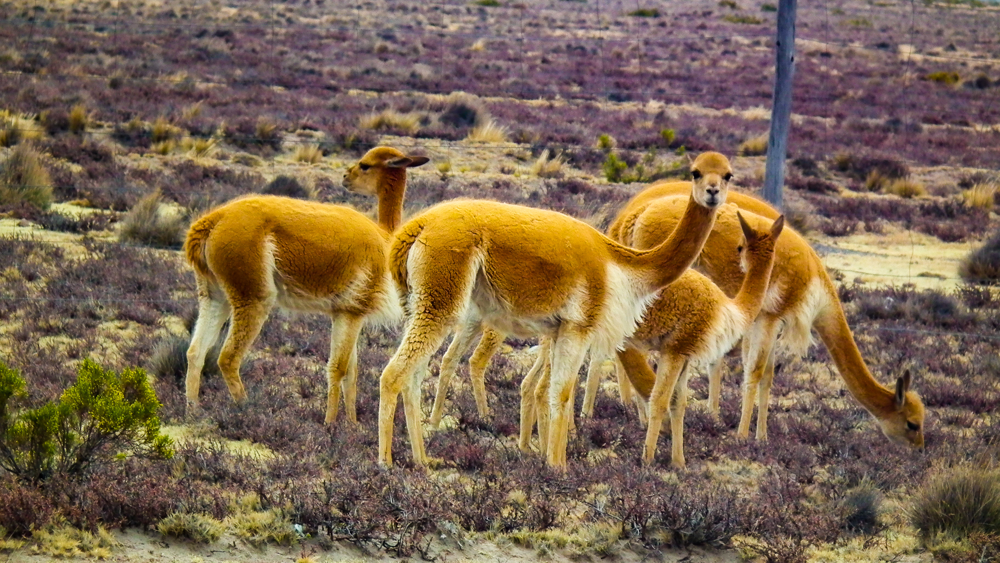

Kanion Colca znajduje się w Peru. Jest to trzecie najczęściej odwiedzane miejsce turystyczne w Peru. Kanion ten w niektórych miejscach ma nawet 4200m głębokości, co za tym idzie brak jakiejkolwiek roślinności na samym dnie kanionu. Około 1200m w dół od samego szczytu kanionu znajduje się wioska, Chivay. Podczas spaceru po pięknym terenie będzie można dostrzec lamy, alpaki i wikunie. Wikunie, są to zwierzęta podobne do małych antylop, żyją w stanie dzikim, a ich wełna jest najdroższa na świecie. Mirador Cruz del Cóndor to miejsce widokowe z którego można wyszukiwać się na niebie kondorów, które są bardzo ważnym symbolem indiańskim. Oznaczają odrodzenie po śmierci oraz świat duchów.

